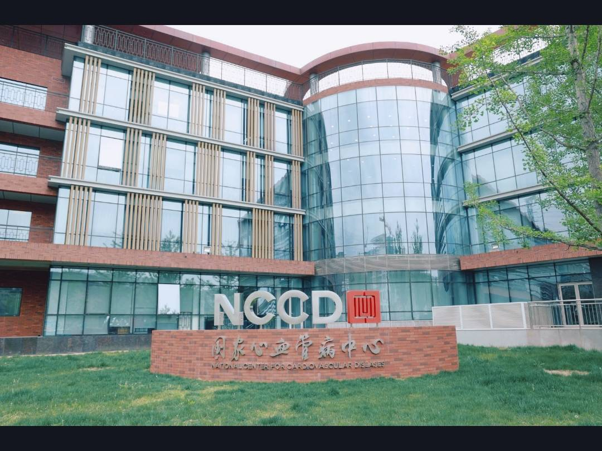

Quick Cost Comparison — Beijing vs US
What's in This Guide
Why International Patients Choose Beijing
Beijing is China's medical capital. The city concentrates the country's most prestigious medical institutions — hospitals that were founded in the early 20th century with missions to bring the best of Western medicine to China, and that have maintained that legacy of clinical excellence for over a century.
Peking Union Medical College Hospital (北京协和医院) and Fuwai Hospital (阜外医院) are not just nationally renowned — they are globally recognized institutions that attract patients from across Asia, the Middle East, Europe, and the Americas. Beijing's hospitals handle the most complex referral cases in China, with specialists who have experience with rare diseases and conditions that even major hospitals in other countries may see only a handful of times per year.
For international patients, Beijing offers access to genuinely world-class medical expertise at costs that are typically 60-80% lower than equivalent treatment in the US or Europe. The city also has the most developed international patient infrastructure of any Chinese city — dedicated international clinics, English-speaking coordinators, and hospitals experienced with international insurance and medical evacuation.
Peking Union Medical College Hospital — The National Leader
Peking Union Medical College Hospital / PUMCH (北京协和医院)
Peking Union Medical College Hospital is China's most prestigious medical institution — founded in 1906 with support from the Rockefeller Foundation, it was built to be China's answer to Johns Hopkins. It consistently ranks as the top hospital nationally across the broadest range of specialties, and is particularly renowned for:
- Oncology: One of China's leading cancer treatment centers, with multidisciplinary tumor boards that review complex cases. Particularly strong in rare cancers, sarcomas, and cases requiring integrated surgical and medical oncology.
- Immunology and Autoimmune Diseases: PUMCH's immunology department is the most respected in China for difficult-to-diagnose autoimmune conditions and rare immunological disorders.
- Respiratory Medicine: Nationally leading department for complex respiratory diseases, including interstitial lung disease, pulmonary fibrosis, and severe asthma.
- Gastroenterology: One of the highest-volume endoscopy and GI centers in Asia, with particular strength in complex pancreatic and biliary disease.
International services: PUMCH's International Medical Center (国际医疗中心) is on the hospital's east wing and handles foreign patient registration, English-language appointments, and interpreter coordination. The center has coordinators who speak English, Japanese, Korean, and other languages. PUMCH accepts most major international insurance plans — confirm direct billing before arrival.
Address: No. 1 Shuaifuyuan, Dongcheng District, Beijing (东城区帅府园1号). Metro Line 1 (Wangfujing Station, Exit A) or Line 5 (Dongdan Station).
Other Top Hospitals in Beijing
Fuwai Hospital (阜外医院 — National Center for Cardiovascular Diseases)

Fuwai is quite simply the best cardiac hospital in China — and among the best in the world. As the National Center for Cardiovascular Diseases, it performs more complex heart surgeries annually than virtually any other hospital globally, with outcomes data that stands up to international scrutiny. If you need heart surgery, this is where China's top cardiac surgeons practice. Strong in coronary artery bypass grafting, valve repair/replacement, aortic aneurysm surgery, and pediatric cardiac surgery.
Address: No. 167 Beilishi Road, Xicheng District, Beijing (西城区北礼士路167号). Metro Line 2 (Fuxingmen Station).
China-Japan Friendship Hospital (中日友好医院)
A large, general-academic hospital with particularly strong departments in respiratory medicine, critical care (ICU), oncology, and general surgery. Its international clinic is well-developed and experienced with foreign patients, making it a practical choice when PUMCH has long wait times. Accepts most major international insurance plans.
Address: No. 2 Yinghua East Road, Chaoyang District, Beijing (朝阳区樱花园东街2号). Metro Line 5 (Huoying Station) or Line 10 (Anzhen Station).
Cancer Hospital, Chinese Academy of Medical Sciences (中国医学科学院肿瘤医院)
China's leading dedicated cancer hospital — the place oncologists themselves would go if diagnosed. Handles the full spectrum of cancer care: surgical oncology, radiation therapy (including proton therapy), chemotherapy, immunotherapy, and clinical trials. Particularly strong in thoracic oncology (lung, esophageal), breast cancer, gastrointestinal cancers, and head and neck cancers.
Address: No. 17 Panjiayuan Nanli, Chaoyang District, Beijing (朝阳区潘家园南里17号). Metro Line 10 (Shilihe Station).
Beijing United Family Hospital (和睦家医院)
Beijing's premier private international hospital — fully JCI-accredited, staffed entirely by English-speaking doctors (many from the US, UK, and Australia), and providing care to international standards. Costs are higher than public hospitals (typically 3-5x) but significantly below equivalent Western hospitals. Good choice for patients who prioritize communication and Western-style care over cost savings, or for those with international health insurance that covers private hospitals.
Address: No. 2 Yabao Road, Chaoyang District, Beijing. Multiple clinic locations across the city.
Beijing Friendship Hospital, Capital Medical University (首都医科大学附属北京友谊医院)
Particularly known for gastroenterology and hepatobiliary surgery — one of China's leading centers for liver transplants and complex GI surgery. Also strong in kidney transplantation and general surgery. More accessible for international patients than PUMCH, with an experienced international ward and shorter wait times for non-emergency cases.
Address: No. 95 Yong'an Road, Xicheng District, Beijing (西城区永安路95号). Metro Lines 7 and 8 (Nanliwar Stop).
Beijing Children's Hospital (国家儿童医学中心 / 北京儿童医院)
The national referral center for pediatric conditions — handles everything from routine childhood illness to the most complex pediatric surgeries, oncology, cardiac surgery, and neonatal intensive care. If your child needs specialized treatment, this is where China's top pediatric specialists practice.
Address: No. 43 Longpeng Street, Xicheng District, Beijing (西城区龙鹏路43号). Metro Line 1 (Fubao Station).
Beijing Hospital Specialties
| Specialty | Top Hospital in Beijing | Beijing Cost (USD) | US Equivalent Cost |
|---|---|---|---|
| Cardiac Bypass / Valve | Fuwai Hospital | $12,000–$18,000 | $80,000–$120,000 |
| Cancer / Oncology | Cancer Hospital CAMC, PUMCH | $15,000–$50,000 | $150,000–$400,000 |
| Complex / Rare Diagnosis | Peking Union Medical College Hospital | $5,000–$30,000 (assessment + treatment) | $20,000–$100,000+ |
| Spine Surgery | PUMCH, China-Japan Friendship | $8,000–$16,000 | $60,000–$100,000 |
| Hip / Knee Replacement | PUMCH, China-Japan Friendship | $8,000–$13,000 | $35,000–$55,000 |
| Liver / Kidney Transplant | Beijing Friendship Hospital, PUMCH | $30,000–$60,000 (kidney); $50,000–$80,000 (liver) | $400,000–$600,000 (kidney); $400,000–$800,000 (liver) |
| Respiratory / Pulmonology | PUMCH, China-Japan Friendship | $3,000–$15,000 | $20,000–$80,000 |
| Pediatric (Complex) | Beijing Children's Hospital | $5,000–$30,000 | $30,000–$300,000 |
What a Real Patient Journey Looks Like
Anna, 44, from Germany — second opinion and treatment at PUMCH for autoimmune condition:
"I'd been dealing with fatigue, joint pain, and skin rashes for two years. My rheumatologist in Berlin suspected lupus but couldn't confirm it with blood tests alone. The waiting time to see a specialist in Germany was five months.
I found PUMCH through a friend who had been treated there for a different condition. I contacted their international center with my medical records — they responded within three days with an appointment date. I flew to Beijing, and within 48 hours had a comprehensive immunology workup, a confirmed diagnosis (systemic lupus erythematosus with secondary Sjogren's), and a treatment plan.
The total cost for the full diagnostic workup, imaging, bloodwork spanning two mornings, and the specialist consultations was $2,800 USD. In Germany, I would have waited five months and still faced significant co-pays. The international coordinator at PUMCH spoke fluent English and arranged everything. The level of clinical rigor genuinely impressed me."
How to Book as a Foreigner
Option 1: Through the Hospital's International Center (Recommended)
Peking Union Medical College Hospital, Fuwai Hospital, China-Japan Friendship Hospital, and Cancer Hospital all have dedicated international offices. Submit your medical records (in English), describe your condition, and they will coordinate specialist appointments and provide cost estimates. Response times typically 2-5 business days.
PUMCH International Medical Center: Email: international@pumch.cn | Phone: +86-10-6910-5299
Option 2: Through Our Free Case Review Service
We work directly with international coordinators at Beijing's top hospitals. Send us your diagnosis and medical reports — we'll identify the most appropriate specialists, get you written cost estimates, and handle the appointment logistics within 24-48 hours.
Option 3: In Person
For patients already in Beijing, visit the international center of your chosen hospital with your passport and any existing medical records. Bring CT/MRI scans on disc if available. International offices are typically open Monday-Friday, 8am-5pm.
We connect international patients with the right specialists at Beijing's top hospitals — for free.
Get a Free Hospital Assessment →
Frequently Asked Questions
Does Peking Union Medical College Hospital accept foreign patients?
Yes. PUMCH's International Medical Center is experienced with international patients and has dedicated coordinators who speak English, Japanese, Korean, and other languages. The hospital accepts most major international insurance plans and has handled patients from over 100 countries.
What is the best hospital in Beijing for cardiac surgery?
Fuwai Hospital is China's leading cardiac center — by any measure, including surgical volume, complexity of cases handled, and published outcomes. For coronary artery bypass, valve surgery, aortic aneurysm, and congenital heart defects, Fuwai's surgeons are among the most experienced in the world.
How do Beijing hospital costs compare to the US?
Surgery at Beijing's top hospitals typically costs 60-80% less than equivalent treatment in the US. A hip replacement at PUMCH costs approximately $8,000–$13,000 USD versus $35,000–$55,000 in the US. Cardiac bypass surgery at Fuwai runs $12,000–$18,000 versus $80,000–$120,000 in the US. Even accounting for travel costs, the total package is significantly cheaper.
Is there English-speaking staff at Beijing hospitals?
Yes, particularly at PUMCH's International Medical Center, China-Japan Friendship Hospital's international clinic, and Beijing United Family Hospital (which is fully English-staffed). Major hospitals also have medical interpreters available for consultations. The international wards coordinate all translation needs for inpatients.
How do I get from Beijing airport to PUMCH?
Beijing Capital International Airport (PEK) is about 28km from central Beijing. Options: pre-arranged hospital transfer (most convenient), taxi (¥80-120, 40-60 minutes in normal traffic), or Airport Express Line to Dongzhimen Station, then Metro Line 1 to Wangfujing (approximately 90 minutes, ¥30).